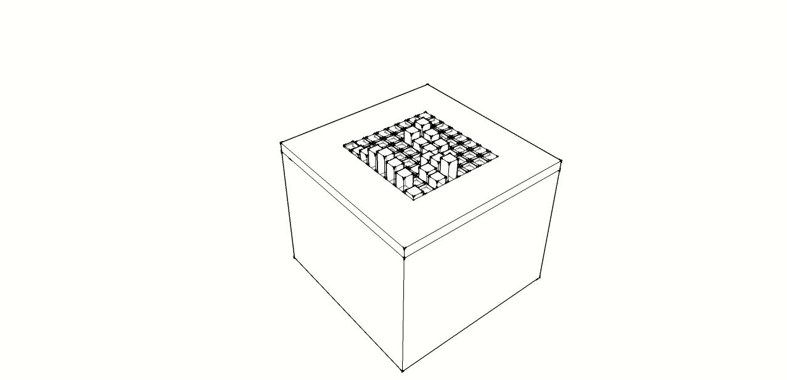

About Week 14
Interface and Application Programming Exercise...

This week assignment is about Interface and Application Programming: write an application that interfaces with an input &/or output device.
With Massimo we have spent a full day about several programming languages and tools, in particular we focused mainly on:
- - Python
- - WXPython
- - WXPython GUI Builder: WXFormBuilder
- - Processing
- - Node.js
Before starting to complete my assignment I decided to make a first insight into the above languages and tools.
I've just installed Python 2.7 and I've tried my first example to read from serial after having installed pySerial. It is a wrapper library that encapsulates the access for the serial port. It provides backends for all OS, Windows, Linux and BSD, by selecting automatically the appropriate one.
Prior to continue further study with Python and WxPython I decide to do some exercises with the other two languages (Processing and Nodejs) in order to command the rgb led and servo motor system used during my output devices exercices.
Processing
Once installed processing I wrote the following code that uses Processing Serial Library. This Library The Serial library reads and writes data to and from external devices one byte at a time. It allows two computers to send and receive data. This library has the flexibility to communicate with custom microcontroller devices and to use them as the input or output to Processing programs.
The code first of all get a color from a color picker and then capture the mouse scroll event to write on serial
sketch_processing_servo_rgb
import javax.swing.JColorChooser;
import java.awt.Color;
import processing.serial.*;
Color javaColor;
boolean open=false;
boolean setted=false;
Serial port; // The serial port
void setup() {
size(100, 100);
color c = color(255,255,255);
javaColor = JColorChooser.showDialog(this,"Java Color Chooser",Color.white);
if(javaColor!=null)
c= color(javaColor.getRed(),javaColor.getGreen(),javaColor.getBlue());
fill(c);
rect(0,0,width,height);
String[] ports=Serial.list();
if(ports.length!=0){
port = new Serial(this, ports[0], 9600);
open=true;
}
}
void draw() {
}
int pos;
void mouseWheel(MouseEvent event) {
float e = event.getAmount();
if (e>0) {
if (pos<180){
pos+=4;
}
}
if (e<0) {
if (pos>0){
pos-=4;
}
}
if(!setted){
String rout = nf(255-javaColor.getRed(),3);
String gout = nf(255-javaColor.getGreen(),3);
String bout = nf(255-javaColor.getBlue(),3);
port.write('r'+rout+'g'+gout+'b'+bout);
setted=true;
}
String sout = nf(pos,3);
println('r'+sout);
if(open){
port.write("s"+sout);
}
}
The code for the board read from the serial and first of all set the color of the rgb Led and in general read the byte and according to the character read (s:move, r:red, g:green, b:blue) write in the related port or set the Servo object.
sketch_board_servo_rgb#includeServo xservo; // servo object //set initial values for x int xpos= 0; int Red = 11; // int Green = 9; //pin definitions int Blue = 10; // int r = 125; // int g = 125; //default all the pins to 125(white) int b = 125; void setup(){ xservo.attach(5); Serial.begin(9600); // rate of communication Serial.println("Rolling"); // some output for debug purposes. } void loop() { static int v = 0; // value to be sent to the servo (0-180) if ( Serial.available()) { char ch = Serial.read(); Serial.print("readinh"); Serial.println(ch); switch(ch) { case 's': Serial.println("Writing servo"); delay(10); v = v * 10 + Serial.read() - '0'; v = v * 10 + Serial.read() - '0'; v = v * 10 + Serial.read() - '0'; xservo.write(v); v = 0; break; case 'r': Serial.println("Writing red"); delay(10); v = v * 10 + Serial.read() - '0'; v = v * 10 + Serial.read() - '0'; v = v * 10 + Serial.read() - '0'; analogWrite(Red,v); v = 0; break; case 'g': Serial.println("Writing green"); delay(10); v = v * 10 + Serial.read() - '0'; v = v * 10 + Serial.read() - '0'; v = v * 10 + Serial.read() - '0'; analogWrite(Green,v); v = 0; break; case 'b': Serial.println("Writing blu"); v = v * 10 + Serial.read() - '0'; v = v * 10 + Serial.read() - '0'; v = v * 10 + Serial.read() - '0'; analogWrite(Blue,v); v = 0; break; } } }
Nodejs
Once installed Nodejs, in order to use it to communicate with the microcontroller I used Firmata.
“Firmata is a generic protocol for communicating with microcontrollers from software on a host computer.” All I need is to install Firmata in my board from Arduino IDE (“Standard Firmata”. File > Examples > Firmata > StandardFirmata). Once installed I can control the board by sending it Firmata instructions over the Serial port. There are Firmata implementations available in most languages, for Node.js too. This means that I can handle the board-logic directly from your Node.js.
So there is a important difference between programming a board via Firmata and programming it from the Arduino IDE. My own program is not in the board, inside it there is only Firmata code. So if I disconnect the board from my pc it doesn't run because it doesn't receive instructions.
To install Firmata inside my Node.js project folder:
npm install firmata
The firmata protocol requires to set the pin mode command:
- -INPUT
- -OUTPUT
- -ANALOG
- -PWM
- -SERVO
The following code commands port 5 with pinMode PWM. A servo connected to this pin will move from position 10 to 30 and the return to 10. The code use a facility code "firmataConnector" for returning the board object.
Node.js Firmatata code: main.js
"use strict";
// Firmata
var serialPort = 'COM5';
var board = require('./firmataConnector').start(serialPort);
board.on('connection', function () {
console.log("successfully connected to the Satshakit!");
// Set the pin to Pulse With Modulation
board.pinMode(5, board.PWM);
board.analogWrite(5, 80);
});
firmataConnector.js
"use strict";
var firmata = require('firmata');
/**
* firmataConnector.js
*
* ABOUT
* Connect to the Arduino via the Firmata protocol.
*
*/
// ANSI escape codes (used to color the server logs)
var magenta = '\u001b[35m';
var green = '\u001b[32m';
var red = '\u001b[31m';
var reset = '\u001b[0m';
exports.start = function (serialPort) {
if(! serialPort) {
console.error('no port address set for the arduino');
return;
}
// connect to the Arduino
var board = new firmata.Board (serialPort, function (err) {
if (err) {
console.log(red + err + reset);
return;
}
//arduino is ready to communicate
console.log(green +'Successfully connected to your Arduino'+ reset);
console.log('Firmware: '+ board.firmware.name +'-'+
board.firmware.version.major +'.'+
board.firmware.version.minor);
// set pin mode short hands
board.INPUT = board.MODES.INPUT;
board.OUTPUT = board.MODES.OUTPUT;
board.ANALOG = board.MODES.ANALOG;
board.PWM = board.MODES.PWM;
board.SERVO = board.MODES.SERVO;
// analog pins
board.A0 = board.pins[board.analogPins[0]].analogChannel;
board.A1 = board.pins[board.analogPins[1]].analogChannel;
board.A2 = board.pins[board.analogPins[2]].analogChannel;
board.A3 = board.pins[board.analogPins[3]].analogChannel;
board.A4 = board.pins[board.analogPins[4]].analogChannel;
board.A5 = board.pins[board.analogPins[5]].analogChannel;
// sensor-shield ports (untested)
board.I0 = board.A0;
board.I1 = board.A1;
board.I2 = board.A2;
board.I3 = board.A3;
board.I4 = board.A4;
board.I5 = board.A5;
board.O0 = 11;
board.O1 = 10;
board.O2 = 9;
board.O3 = 6;
board.O4 = 5;
board.O5 = 3;
board.emit('connection');
});
board.lineLog = function (msg) {
process.stdout.clearLine(); // clear previous output
process.stdout.cursorTo(0); // move cursor to beginning of line
process.stdout.write(msg);
};
return board;
}
An interesting Node.js library using The Firmata Protocol is Johnny-five a JavaScript Robotics and IoT programming framework.
For example the following code from Johnny-five framework replicates the Servo Sweep example:
eg/servo.js
var five = require("../lib/johnny-five.js");
var board = new five.Board();
board.on("ready", function() {
var servo = new five.Servo(5);
// Servo alternate constructor with options
/*
var servo = new five.Servo({
id: "MyServo", // User defined id
pin: 10, // Which pin is it attached to?
type: "standard", // Default: "standard". Use "continuous" for continuous rotation servos
range: [0,180], // Default: 0-180
fps: 100, // Used to calculate rate of movement between positions
invert: false, // Invert all specified positions
startAt: 90, // Immediately move to a degree
center: true, // overrides startAt if true and moves the servo to the center of the range
specs: { // Is it running at 5V or 3.3V?
speed: five.Servo.Continuous.speeds["@5.0V"]
}
});
*/
// Add servo to REPL (optional)
this.repl.inject({
servo: servo
});
// Servo API
// min()
//
// set the servo to the minimum degrees
// defaults to 0
//
// eg. servo.min();
// max()
//
// set the servo to the maximum degrees
// defaults to 180
//
// eg. servo.max();
// center()
//
// centers the servo to 90°
//
// servo.center();
// to( deg )
//
// Moves the servo to position by degrees
//
// servo.to( 90 );
// step( deg )
//
// step all servos by deg
//
// eg. array.step( -20 );
servo.sweep();
});
Python and wxPython
After my exercises with Processing and Node.js I continued my experience with Python, in particular with wxPython
First of all decided to integrate in my development environment PyDevPython IDE plugin for Eclipse.
The easy way to install PyDev is by means Eclipse Update Manager(Help > Install New Software) and add and add the following package server url:
http://pydev.org/updates or
http://pydev.org/nightly
and then it is necessary to follow the Eclipse steps wizard.
After this I starter to install and configure wxPython.
wxPython is a GUI toolkit for the Python programming language. It allows to create applications with a rich and intuitive functional graphical user interface. It is implemented as a Python extension module (native code) that wraps the popular wxWidgets cross platform GUI library, which is written in C++.
After a first tour on its features and studied several examples provided by wxPython demo suite I completed my environment with wxFormBuilder a rapid application development (RAD) software for wxPython GUI.
By Using Eclipse, wxPython and wxFormBuilder let me to implement a complete Python GUI application by separating layout, skeleton code and application logic.
Once created a Python project in eclipse I followed the following process to create my application, a first release of a desktop application in order to test my final project Table, in particular to control servos and rgb leds:

The wxControlTable.py module implements and then overrides the handlers of the module/class generated automatically by the wxFormBuilder that is the TableControlWindow.py module.
# The class for the main app class wxTableControl(TableControlWindow.ControlTable):
In order to monitor several ports concurrently, I implemented a multithread serial monitor.